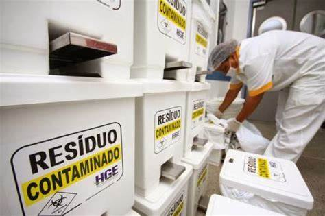

Lixo Hospitalar
Durante todo o período do nosso trimestre, uma pesquisa foi designada a todas as equipes, uma pesquisa sobre diversos tipos de lixo, onde cada equipe ficaria com um tipo especifico
Para a equipe 6 (Yan e cia), o foco da pesquisa foi para lixo hospilar. Onde teriamos que montar uma pagina em html(esta que voosa senhoria está a ver) demonstrando nossa pesquisa sobre todos os processos do lixo hospitalar.
O que é?
O lixo hospitalar, também chamado de resíduo hospitalar e de resíduo de serviços de saúde, é todo tipo de lixo proveniente do atendimento a pacientes ou de qualquer estabelecimento de saúde ou unidade que execute atividades de natureza de atendimento médico, tanto para seres humanos quanto para animais. São divididos em: resíduos sólidos; resíduos em estado sólido ou semissólido e líquidos cujas particularidades tornem inviável seu lançamento na rede pública de esgotos.
Hospitais e outros centros de tratamento de saúde geram um volume de resíduos cada vez maior, dos quais cerca de 15% podem ser infecciosos, tóxicos ou radioativos. A Organização Mundial da Saúde começou a enfrentar o problema na década de 1980.
O lixo hospitalar, também chamado de resíduo hospitalar e de resíduo de serviços de saúde, é todo tipo de lixo proveniente do atendimento a pacientes ou de qualquer estabelecimento de saúde ou unidade que execute atividades de natureza de atendimento médico, tanto para seres humanos quanto para animais. Este tipo de lixo também pode ser encontrado em locais como centros de pesquisa e laboratórios de farmacologia. Tal qual for sua origem ou tipo, o descarte do lixo hospitalar deve ser feito seguindo regras específicas que evitem contaminação ambiental. O lixo hospitalar pode representar risco à saúde humana e ao meio ambiente se não houver adoção de procedimentos técnicos adequados no manejo dos diferentes tipos de lixo gerados. Alguns exemplos de lixo hospitalar são materiais biológicos contaminados com sangue ou patógenos, peças anatômicas, seringas e outros materiais plásticos; além de uma grande variedade de substâncias tóxicas, inflamáveis e até radioativas.
Inicialmente, concentrou-se nos países ricos, depois mudou o foco para os países pobres, onde métodos de eliminação inseguros, como aterros sanitários e incineradores inadequados, preocupavam. Aos poucos, a compreensão do problema passou por mudanças, inclusive do enfoque no conteúdo do resíduo hospitalar considerado “perigoso”, passando para todas as formas de resíduos, e da aceitação do resíduo médico como um inconveniente inerente aos cuidados de saúde de alta qualidade, até o conceito de que evitar a produção de resíduos hospitalares faz parte dos cuidados de saúde de alta qualidade.
Separação do Lixo
O treinamento para a separação desse tipo de resíduo é uma exigência do Conselho Nacional do Meio Ambiente (CONAMA), que oferece subsídios para que os hospitais e clínicas elaborem planos de gerenciamento de resíduos do serviço de saúde. O objetivo é adequar a estrutura das unidades para o tratamento correto dos resíduos.
Segundo as normas sanitárias, o lixo hospitalar deve ser rigorosamente separado e cada classe deve ter um tipo de coleta e destinação. De acordo com as normas, devem ser separadas conforme um sistema de classificação que inclui os resíduos infectantes – lixo classe A, como restos de material de laboratório, seringas, agulhas, hemoderivados, entre outros, perigosos – classe B, que são os produtos quimioterápicos, radioativos e medicamentos com validade vencida – e o lixo classe C, o mesmo produzido nas residências, que pode ser subdividido em material orgânico e reciclável. O treinamento visa adequar os estabelecimentos às normas de tratamento do lixo hospitalar, estabelecidas na Lei Federal nº 237. Os hospitais têm prazo para apresentar um plano de gerenciamento dos resíduos e, com isso, obter um licenciamento ambiental e adaptar-se às exigências legais. Caso não consigam o licenciamento, ficam sujeitos à aplicação de multas
